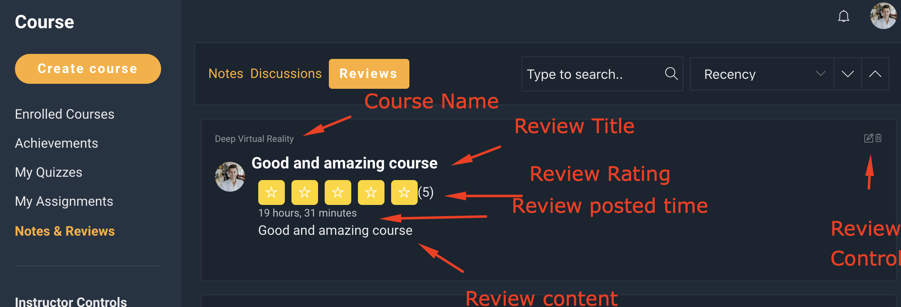

WPLMS Student guide.
Welcome to the Students's guide for WPLMS Learning management system. The purpose of this guide is to make student aware of all the controls available in his profile to pursue educational material on the WPLMS Site.
Members Area
Members area is the personal area where you interact with the WPLMS.
Here you will find all the controls to pursue courses and other functionality enabled by your site administrator for you.To reach the members area, you will need to log into the site. To log in to the site you will need to click on the "Login" link available in the screen. Clicking on it you will be required to create an account in the site.
The registration process depends on how the site adminsitrator has configured and is out of scope for this topic. Once the registraiton is compelte and you have the account details to login. You can login to the site from the login screen. The login screen is again configured by the adminsitartor, it could be placed on top header or on a page of your site.
Once you are logged in you will see a screen which appears similar to below.
In this section of your screen. There are 2 menus appearing, the left most is the profile menu and on its right is the profile submenu.
You can see the Active item in your profile menu from the highlighted screen or from the top title in the submenu.
You will also notice an arrow appears where the menu item has more items. Mouse over on the arrow and you will see more items which appear below the current hovered item.
Towards the bottom of your screen you will see option to enable or disable the mode of your screen. There are 2 modes available, light mode and dark mode which change the color combination of your screen.
The last item is the logout, clicking on it will log you out form the members area and you will land on a different page which has been set by your administrator.
Filling out your profile
The profile is a publically accessible page of portraying your self. Much like that of any social media page like the facebook profile or a linkedin profile. Here you are able to show what you fill out in the profile.
There are different layouts possible for public profiles depending on how you are classified by the site administrator.
The data in your public profile comes from the information that you fill in the members area.
The profile may not need include of all the information that you fill in your members area.
If you registered using a form, then you may find that the values that you entered in the form appear pre-filled in the profile. There may also be some fields which are specifically set for your profile. Keeping a profile 100% complete is always recommended.
Uploading your Photo
You can change your Profile image aka. avatar / Digital Pic from the "Change profile photo" section. If you have already uploaded an avatar image, you will see option to change the image. Click on Change image button to change your image.
You will see a upload file box. Click on that box and you can select the avatar which you want to upload.
Finally click on the upload image to set the image as your profile image.
Once the image is uploaded you can see the image in the site. It may not appear straight away but if you reload the page or drag to refresh then you will be see the updated image. To chnage the image you can click agian on the change profile photo.
Enrolled Courses
The Enrolled courses appears as a sub-section to the courses section in your members area. It is the most important section of your Learning. Here you can see all the courses you are enrolled in.
The courses in this section are categorised into 2 sub-sets. Courses categorised on accessibility "Active" or "Expired" and Courses categorised on your progress status "Started" , "Continue" or "pursuing", "Under evaluation" (for courses where manual evaluation by instructor is required) and "Finished courses" (completed courses).
Lets see what each of these categorisations actually mean:
- Active Courses : The courses you are currently pursuing actively and have not crossed the maximum duration deadline.
- Expired Coruses : The courses where the maximum allocated duration to complete the course is crossed. To bring these courses back to Active courses, you will need to contact your instructor. If this is simply a Paid course you can re-purchase the course and you will get this course in the active section.
There is also a search course. Where you can enter the course name so see the results. If you are copying and pasting a name try pressing space or enter to get accuracte results.
The last is the "Course status" which is basically a representation of the progress you've made in the course. You will also see this status on the button labels in the Courses appearing on this screen.
- Start Course Course not yet started. Progress % is always Zero.
- Continue Course Course started. Progress % is always more than Zero but the course has not been submitted for evlauation.
- Under Evaluation Course has been submitted for evlauation and the instructor is yet to complete the evaluation.
- Completed Course has been submitted and evaluated. You have received a score or grade for the course.
- Course Featured image. It may also have the course introductory video.
- Course Name or Title
- Course Instructor. You can also see multiple instructors here.
- Remaining access time for the course. Every course has a maximum access time during which the course needs to be completed. This shows the remaining time in the course. After which your access to the course would be locked.
- Course Progess bar and percentage. This is the number of items completed by you in the course curriculum. Sections are not counted. For example a course has 8 units and 2 quizzes. A student who completed 5 units or 4 units and 1 quiz stands at a 50% progress.
- Course Status : As discussed previously this is an indicator of the course progress.
- Course Retakes : If your instructor enabled retaking of courses more than once. You may see the re-take course option. When you click on this button your entire course progress resets. All the units, quizzes, assignments are reset and you have to start the course again afresh.
Achievements
This is the achievements section. It comprises of your Course Badges, Certificates and a list of finished courses with a full report card on every course.
Depending on your administrator has configured the public profiles, these achievements can be displayed on the public profiles as well. Beliw is a typical description of what a badge and a certificate is, this description is not limited and certificates and badges can be used for various purposes.
A badge is like a excellence medal where the student scores more than a certain percentage set in the course - settings
A certificate is similar to a course passing certificate. The passing score is set in course settings for every course.
Lets see the achievements section:
There is a Badges Section which shows all the badges you earned in the site. There is acertificates section which shows the list of certificates you cheieved on the site. Clicking on the certificate opens the certificate in a new tab.
This section also contains the quiz certificates and the badges which are awarded from Custom learning paths , programs if enabled by the site instructor.
Then at the last we have the list of finished courses. Each finished course block showsn the course image, course instructor, course name and the score you achieved in the course. If you also achieved a badge or a certificate in the course, it will be displayed in the course block.
Clicking on the finished course will open the finished course block. This block contains a full report card for the course.
You will be able to see instructor remarks if they are sent by the insturctor. Badges, Certificates and a retake button also appears if set in the course.
To close the finished course card, click on the "x" icon on the top right corner.
Quizzes
This is the quizzes section. Quizzes are basically assessments that are done by your instructors.
This section shows the quizzes you have enrolled into. Which comprises of quizzes assigned to you or you started those quizzes during a course or outside.
So this is like a shortcut to all the quizzes that you have attempted in the site. For ongoing quizzes you will also see a timer on the quiz block if it is a timed quiz.
This is the my quizzes screen. Each quiz block shows the name of the quiz, your attempt Date & Time on for that quiz. The Quiz type it belongs to. The marks you got for the quiz and if it is a timed quiz, you will see the total time for the quiz.
The single quiz result shows your attempt on that quiz. It shows the full question list, the scores, your attempt date. The quiz description. Total marks and your score on that quiz. Along with detailed feedback on every question attempt. Which includes the marks awarded for that question. The answer selected by you and the correct and incorrect options for that question attempt.
You will see the pagination to move to next question set and view the result in detail.
Assignments
This is the assignments section. Assignments are basically assessments which have a longer duration and a specific task. The assignment can be of two types, Essay type and Dyanmic type.
This section shows the assignments you have enrolled into. Which comprises of assignments you started during pursue of a course.
So this is like a shortcut to all the assignments that you have attempted in the site. For ongoing assignments you will also see a timer on the assgnment block if it is a timed quiz.
See below screenshot to understand the information on the assignment block.
You can search fo existing assignments or sort the assignments by Alphabetically, recency and popuplarity. Recency here means the time when assignment was published by the insturctor. The Popularity means sorting the assignment based on the number of attempts made by students pursing the assignment.
On clicking the assignment you can see the result and remarks of the assignment in detail.
Notes & Discussions
Notes and discussions module contains of all the notes and public discussions you have participated in the site.
You can create notes and participate in public discussions in Courses. All the notes and discussions that you participate in reflect here.
All the reviews you post in the site also appear in this section.
Notes
This acts as a shortcut and you can easily go through the notes that you post while pursuing the courses. Check the Course pursue document to learn how the course pursue works.
Discussions
This is similar to notes. Notes are private and only visible to you. Public comments and discussions are visible to all. The questions that you post to the instructor also appear here with the instructor's answer.

Reviews
This is the reviews you have posted for the courses. 